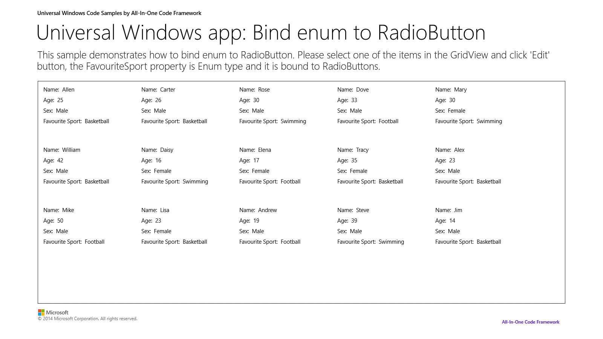
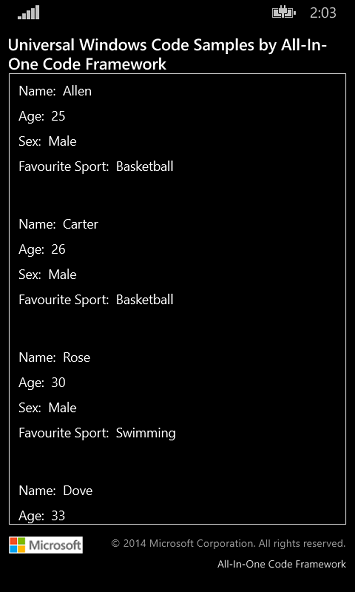

How to bind enum to RadioButtons in universal Windows apps
How to bind enum to RadioButton in universal Windows apps
Introduction
The Customer class in this sample contains a ‘Sport’ enum type property; the sample shows how to convert Enum type To Boolean type, and vice versa. It also shows how to bind the enum type to RadioButtons.
This sample was upgraded to universal Windows app which targets both Windows 8.1 and Windows Phone 8.1.
Running the Sample
- After you launch the sample on Windows 8.1, this screen will be displayed.

The sample launching on Windows Phone 8.1:

2. Click to select one of the items in GridView, the edit page will be displayed. You can select other RadioButton options and click ‘Save’ at the bottom of the page.


Using the Code
The code below shows how to create EnumToBoolConverter:
public class EnumToBoolConverter : IValueConverter
{
public object Convert(object value, Type targetType, object parameter, string language)
{
string param = parameter as string;
if (param == null)
return DependencyProperty.UnsetValue;
if (Enum.IsDefined(value.GetType(), value) == false)
return DependencyProperty.UnsetValue;
object paramValue = Enum.Parse(value.GetType(), param);
return paramValue.Equals(value);
}
public object ConvertBack(object value, Type targetType, object parameter, string language)
{
string param = parameter as string;
if (parameter == null)
return DependencyProperty.UnsetValue;
return Enum.Parse(typeof(Sport), param);
}
}
public class EnumToBoolConverter : IValueConverter { public object Convert(object value, Type targetType, object parameter, string language) { string param = parameter as string; if (param == null) return DependencyProperty.UnsetValue; if (Enum.IsDefined(value.GetType(), value) == false) return DependencyProperty.UnsetValue; object paramValue = Enum.Parse(value.GetType(), param); return paramValue.Equals(value); } public object ConvertBack(object value, Type targetType, object parameter, string language) { string param = parameter as string; if (parameter == null) return DependencyProperty.UnsetValue; return Enum.Parse(typeof(Sport), param); } }
The code below shows the binding in xaml:
<StackPanel Grid.Row="3" Grid.Column="1" HorizontalAlignment="Left" VerticalAlignment="Top" Margin="0,15,0,0">
<RadioButton IsChecked="{Binding Path=FavouriteSport,Converter={StaticResource ETBConverter},ConverterParameter=Basketball, Mode=TwoWay}" FontSize="25" Margin="0,0,0,10">Basketball</RadioButton>
<RadioButton IsChecked="{Binding Path=FavouriteSport,Converter={StaticResource ETBConverter},ConverterParameter=Football, Mode=TwoWay}" FontSize="25" Margin="0,0,0,10">Football</RadioButton>
<RadioButton IsChecked="{Binding Path=FavouriteSport,Converter={StaticResource ETBConverter},ConverterParameter=Baseball, Mode=TwoWay}" FontSize="25" Margin="0,0,0,10">Baseball</RadioButton>
<RadioButton IsChecked="{Binding Path=FavouriteSport,Converter={StaticResource ETBConverter},ConverterParameter=Swimming, Mode=TwoWay}" FontSize="25" Margin="0,0,0,10">Swimming</RadioButton>
</StackPanel>
<StackPanel Grid.Row="3" Grid.Column="1" HorizontalAlignment="Left" VerticalAlignment="Top" Margin="0,15,0,0"> <RadioButton IsChecked="{Binding Path=FavouriteSport,Converter={StaticResource ETBConverter},ConverterParameter=Basketball, Mode=TwoWay}" FontSize="25" Margin="0,0,0,10">Basketball</RadioButton> <RadioButton IsChecked="{Binding Path=FavouriteSport,Converter={StaticResource ETBConverter},ConverterParameter=Football, Mode=TwoWay}" FontSize="25" Margin="0,0,0,10">Football</RadioButton> <RadioButton IsChecked="{Binding Path=FavouriteSport,Converter={StaticResource ETBConverter},ConverterParameter=Baseball, Mode=TwoWay}" FontSize="25" Margin="0,0,0,10">Baseball</RadioButton> <RadioButton IsChecked="{Binding Path=FavouriteSport,Converter={StaticResource ETBConverter},ConverterParameter=Swimming, Mode=TwoWay}" FontSize="25" Margin="0,0,0,10">Swimming</RadioButton> </StackPanel>
More Information
IValueConverter Interface
http://msdn.microsoft.com/en-us/library/windows/apps/BR209903
Microsoft All-In-One Code Framework is a free, centralized code sample library driven by developers' real-world pains and needs. The goal is to provide customer-driven code samples for all Microsoft development technologies, and reduce developers' efforts in solving typical programming tasks. Our team listens to developers’ pains in the MSDN forums, social media and various DEV communities. We write code samples based on developers’ frequently asked programming tasks, and allow developers to download them with a short sample publishing cycle. Additionally, we offer a free code sample request service. It is a proactive way for our developer community to obtain code samples directly from Microsoft.